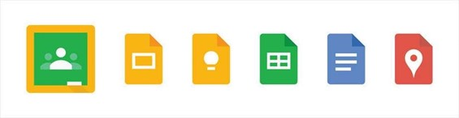
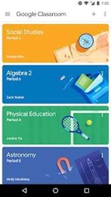
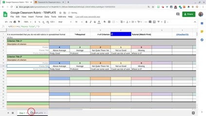
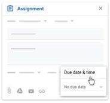
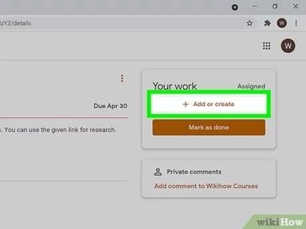
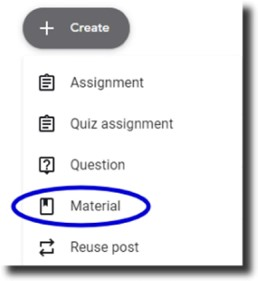

GOOGLE CLASSROOM
WHAT IS A GOOGLE CLASSROOM?
Google Classroom is a free online tool that helps teachers and students interact, share assignments, and stay organized. Teachers can create lessons, assign tasks, monitor student progress, and provide feedback. Next, students can submit their work, ask questions, and collaborate with peers all in one convenient space. It simplifies the learning process, whether in the classroom or online.
FEATURES
Google Apps Integration
Google Classroom works smoothly with other Google tools like Google Docs, Google Drive, Google Meet, and Google Forms, creating a seamless workflow by linking all the essential tools required for teaching and learning for both students and teachers.
Mobile Apps
Feeling too lazy to grab your laptop? No worries! Google Classroom now has a mobile app for both iOS and Android, so students and teachers can access the platform from their smartphones or tablets. Stay connected and manage your coursework on the go even during your lunch break!
Grading Rubric
Teachers can create personalized grading rubrics for assignments, ensuring fair and consistent grading. These rubrics set clear expectations for students and help make grading transparent. This way, you can easily see your grade as soon as it's available!
Due Dates and Deadline
Google Classroom allows teachers to set due dates for assignments. Teachers can assign due dates to tasks, which are automatically reflected in the students' task lists. This helps students manage their time and stay on top of deadlines. Do not forget about the deadlines!
GUIDELINES TO USE GOOGLE CLASSROOM
A) SUBMIT AN ASSIGNMENT
1. Go to Google Classroom: Start by visiting classroom.googIe.com. If you are on a mobile device, download the Google Classroom app from the App Store (iOS) or Google Play Store (Android). Log in using your school or university Google account. Make sure you enter the correct email and password to avoid trouble.
2. Select Your Class: After logging in, you will see a dashboard with all the classes you are enrolled in. Do not forget to click on the right class where the assignment is posted.
3. Go to the Classwork Tab: At the top of your class page, you will find several tabs which are Stream, Classwork, People, and Grades. Clicking on this tab will show you a list of all the assignments and learning materials for that class. Next, open the Assignment tab then click on the assignment title to view the full details.
4. Attach Your Work: After reviewing the assignment, scroll down to the "Your Work" section, where you will find the option to Add or Create your submission. You have several options for submitting your assignment so do choose according to your completed task.
5. Click "Turn In”: Once everything looks good, click the blue Turn In button at the top right of the screen. A pop-up window will appear asking you to confirm the submission. Click Turn In again to confirm that you want to submit your assignment.
B) ACCESS TO MATERIALS
1. Go to Google Classroom: Start by visiting classroom.googIe.com. If you are on a mobile device, download the Google Classroom app from the App Store (iOS) or Google Play Store (Android). Log in using your school or university Google account. Make sure you enter the correct email and password to avoid trouble.
2. Select the Relevant Class: On the Google Classroom homepage, click on the class name where you want to access the materials. Each class is listed by its name, then click on the class you are interested in, and you will be taken to the class's main page.
3. Browse Through Topics or Posts: After clicking on the "Classwork" tab located at the top of the screen, try to look through the various topics, assignments, and resources your teacher has posted. If the content is organised into topics, you can filter by subject or unit to find specific materials.
4. Download or View Attachments: If the post includes attachments like PDFs, Word documents, or presentation slides, click on the file to open it or download it to your device. Google Classroom allows you to either view files in a new tab or download them to your device for offline access.
BENEFITS OF GOOGLE CLASSROOM
FOR TEACHERS
Easy Access to Resources
- Google Classroom helps teachers to provide easy access to a variety of educational resources. It is because teachers can upload documents, videos, links to external websites, or images making sure that students have all the materials they need in one place. This is particularly useful for distance or hybrid learning environments where students may not have immediate access to in-person resources. In one app, students can have all the access in one go.
Centralised Grading System
- Google Classroom provides a centralised location where all assignments, grades, and feedback are stored. Teachers can access a single platform to view students' submitted work, grade assignments, and keep track of the overall progress of the class. This reduces the need for multiple tools or spreadsheets and allows for easy, organized record-keeping For instance, when teachers create assignments, students can attach rubrics, provide instructions, and set due dates all in one place.
FOR STUDENTS
Accessibility
- Google Classroom provides students with the ability to access their assignments and course materials from any device with an internet connection. Whether using a computer, tablet, or smartphone, students can engage with their coursework anytime and from anywhere. This feature is particularly valuable for students who may not have regular access to physical classrooms or those who need to study or complete assignments outside of school hours. As a result, learning becomes more flexible and it is not confined to a specific classroom environment.
Accountability
- Google Classroom helps students to be more responsible for their learning by giving them clear visibility into their assignments, deadlines, and grades. By having access to all their work in one place, students can track their progress, ensure they meet deadlines, and submit assignments on time. This transparency promotes accountability, encouraging students to manage their time effectively and stay on top of their responsibilities. Through regular reviews of their performance and feedback, students also learn to improve and take proactive steps in their educational journey.
PERSONAL REVIEW
I truly appreciate Google Classroom for enhancing my learning experience. It offers a well-structured and user-friendly platform that allows me to easily track assignments, deadlines, and feedback, which has significantly improved my time management and helped me stay on top of my studies. The option to collaborate in real-time with classmates on shared documents, along with the ability to access materials anytime and from any location, has made learning more flexible and effective. Furthermore, the prompt feedback from teachers allows me to consistently refine my work, and the use of digital tools has enhanced my technical skills. Overall, Google Classroom promotes a more organised and collaborative approach to learning.